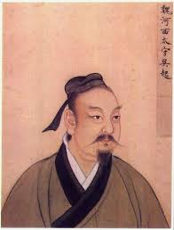

¿Quién fue Wu Qi?
Wu Qi (440 a.C. – 381 a.C.) fue un influyente estratega militar y político de la antigua China, particularmente durante el periodo de los Reinos Combatientes. Conocido por su gran disciplina, promovió reformas militares profundas basadas en la meritocracia y la legalidad.
Formación y Trayectoria
Originalmente fue seguidor de ideas confucianas, pero adoptó el legalismo como base de su pensamiento militar. Sirvió al estado de Lu y posteriormente a Chu, donde impulsó reformas administrativas y militares que aumentaron la eficiencia del ejército.
Reformas Militares
Wu Qi insistía en la igualdad entre oficiales y soldados, predicando con el ejemplo. Prohibió privilegios injustificados y castigó la corrupción. Estas reformas le ganaron el respeto del ejército pero también la enemistad de la nobleza.
Obra
Escribió el tratado militar Wuzi, uno de los "Siete Clásicos Militares" de China, donde detalla estrategias, tácticas y principios de liderazgo militar. Su legado influyó notablemente en estrategas posteriores.
Final de su Vida
A pesar de sus logros, Wu Qi fue asesinado por miembros de la aristocracia de Chu que se oponían a sus estrictas políticas. Su muerte marcó el fin de sus reformas, pero su pensamiento militar perduró durante siglos.